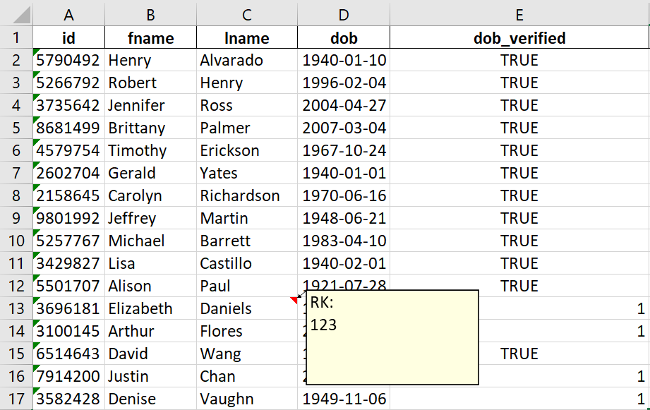

Code
from IPython.display import HTML
HTML(
"""
<video width="640" height="480" controls>
<source src="demo.mp4" type="video/mp4">
</video>
"""
)from IPython.display import HTML
HTML(
"""
<video width="640" height="480" controls>
<source src="demo.mp4" type="video/mp4">
</video>
"""
)copy_subset command (VBA snippet can be found below). When prompted, select the header columns in the file w/ updates.original and rename the sheet w/ updates to update.core.main and move the result to the original data file.paste_subset command. When prompted, enter the name of the result sheet (by default, it should be result).Steps 1-3 will result in a file similar to example/begin.xlsx. Here you can see we have all the main data types in the original sheet: string, dates, boolean, float, and int.
In the update sheet you will notice not all cells are filled in because they don’t need to be. If there are no changes, you can leave the cells blank and it won’t overwrite anything.
Of note are cells G7 and F8. G7 will clear any existing data and F8 will append the comment to the existing data:
Step 4 is to run core.main (ignore REFRESH). Here you specify the key/ID column (must be unique).
# * DOC
from update_xl import core as uxl
if REFRESH:
uxl.main(
key_col="id",
str_cols=["postal_code"], # the key column will always be added
input_file="../example/begin.xlsx",
)The result and changelog is added to the same input file. Here we have renamed it to middle.xlsx.
You will notice something strange with the boolean and int columns:

The ints aren’t really too big an issue - the only adverse effect is cluttering up the changelog, which could be cleaned separately.
The boolean column might be an issue so it’s better to avoid booleans altogether and use a string representation instead (‘Y’/‘N’).
The result is in the same order as the original data and can be copy/pasted into the original data via VBA script (or manually, if the dataset is small enough).
Pasting in this way preserves any notes added to cells, as can be seen in end.xlsx: 
Open the VBA console’s Immediate Window to double check what columns were updated. It should be noted that columns updated in this way need to have unique names, otherwise results may be unexpected.
Easiest way to use these scripts is to add it to your Personal.xlsb file and add the commands to the ribbon. This way, you can run macros even in files without the xlsm extension.

Sub copy_subset()
Dim input_col_heads As Variant
Dim i As Long
Application.ScreenUpdating = False
' select header of key col
Range(ActiveCell, ActiveCell.End(xlDown)).Select
col_head_row = ActiveCell.Row
total_rows = Selection.Rows.Count
Selection.Copy
curr_sht_name = ActiveSheet.Name
Sheets.Add
new_sheet_name = ActiveSheet.Name
Sheets(new_sheet_name).Cells(1, 1).Select
ActiveCell.PasteSpecial xlPasteFormats
ActiveCell.PasteSpecial xlPasteValues
Set select_cells = Application.InputBox( _
Title:="Input", _
Prompt:="Select Column Headers in Update Data", _
Type:=8)
input_col_heads = select_cells.Value
For i = LBound(input_col_heads, 2) To UBound(input_col_heads, 2)
col_head_name = input_col_heads(1, i)
rel_col = Sheets(curr_sht_name).Cells(col_head_row, 1).EntireRow.Find(What:=col_head_name, _
LookIn:=xlValues, LookAt:=xlWhole, SearchOrder:=xlByColumns, _
SearchDirection:=xlNext, MatchCase:=True).Column
Sheets(curr_sht_name).Activate
ActiveSheet.Range(Cells(col_head_row, rel_col), Cells(col_head_row - 1 + total_rows, rel_col)).Select
Selection.Copy
Sheets(new_sheet_name).Activate
Sheets(new_sheet_name).Cells(1, i + 2).Select
ActiveCell.PasteSpecial xlPasteFormats
ActiveCell.PasteSpecial xlPasteValues
Next i
Columns("A").Select
Selection.Delete
Columns("A").Select
Selection.Delete
Application.ScreenUpdating = True
End SubSub paste_subset()
Application.ScreenUpdating = False
' select key col header on original data sheet
original_data_sht = ActiveSheet.Name
key_col = ActiveCell.Value
col_head_row = ActiveCell.Row
ActiveCell.End(xlDown).Select
t_row_count = ActiveCell.Row
row_count = t_row_count + 1 - col_head_row ' updated 20240615 - ensures no empty cells
' input - enter result sheet
updated_data_sht = InputBox("Enter name of update result sheet: ", "Input", "result")
Sheets(updated_data_sht).Select
' get dimensions
'Cells(1, 1).End(xlDown).Select
'row_count = ActiveCell.Row
Cells(1, 1).End(xlToRight).Select
col_count = ActiveCell.Column
Debug.Print ("Shape:")
Debug.Print (row_count - 1)
Debug.Print (col_count - 1)
Debug.Print ("")
' loop
For i = 1 To col_count
col_head_name = Cells(1, i)
If col_head_name = key_col Then
' pass
Else
rel_col = Sheets(original_data_sht).Cells(col_head_row, 1).EntireRow.Find(What:=col_head_name, _
LookIn:=xlValues, LookAt:=xlWhole, SearchOrder:=xlByColumns, _
SearchDirection:=xlNext, MatchCase:=True).Column
ActiveSheet.Range(Cells(1, i), Cells(row_count, i)).Select
Selection.Copy
Sheets(original_data_sht).Activate
Sheets(original_data_sht).Cells(col_head_row, rel_col).Select
' data validation
Debug.Print (col_head_name)
Debug.Print (ActiveCell.Value)
Debug.Print (ActiveCell.Address)
Debug.Print ("")
ActiveCell.PasteSpecial xlPasteValues
Sheets(updated_data_sht).Activate
End If
Next i
'Application.DisplayAlerts = False
'Sheets(updated_data_sht).Delete
'Application.DisplayAlerts = True
Application.ScreenUpdating = True
End Sub